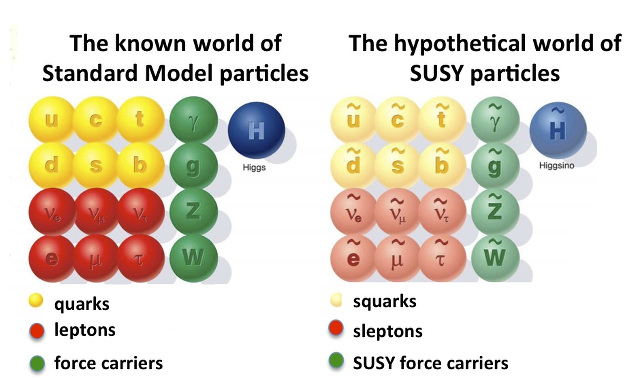
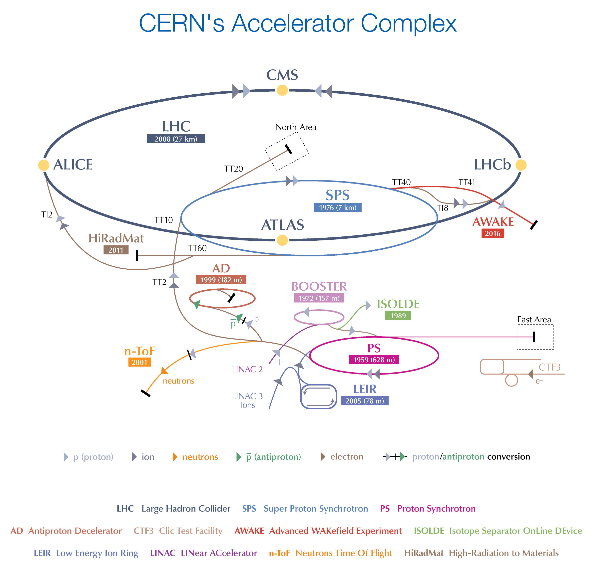
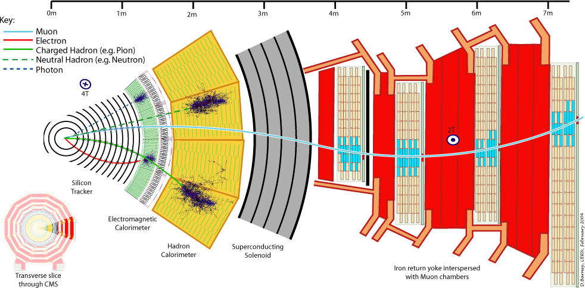
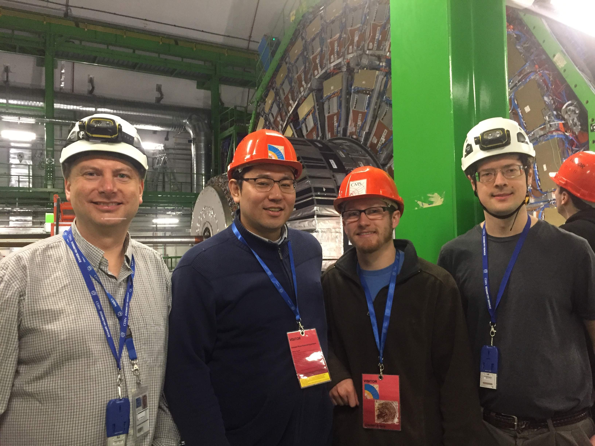
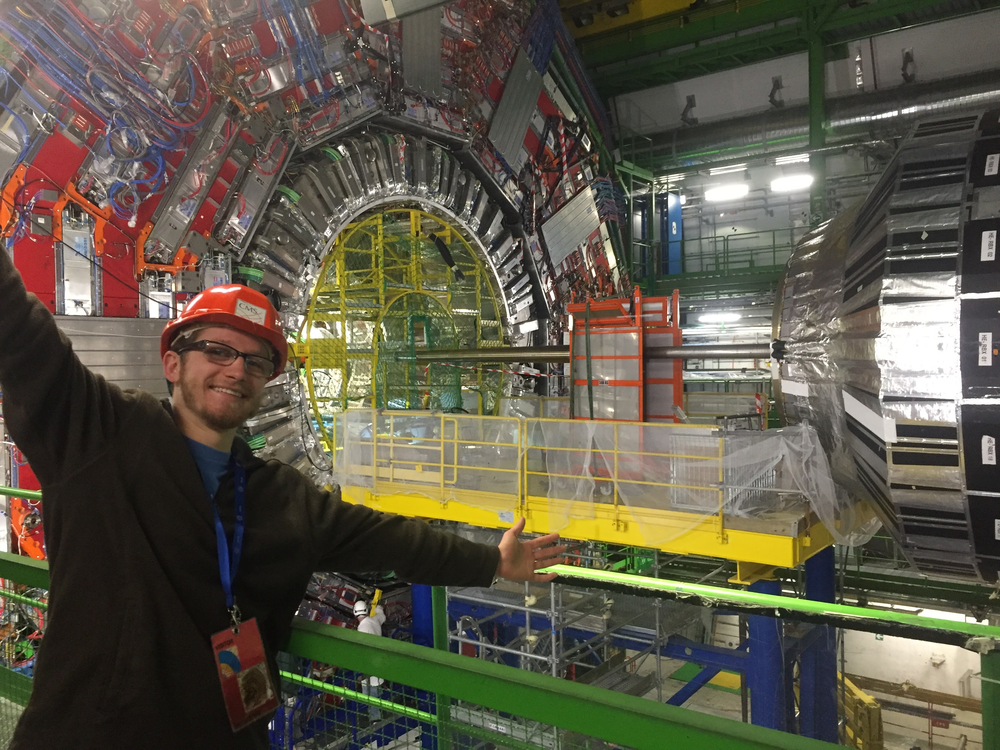
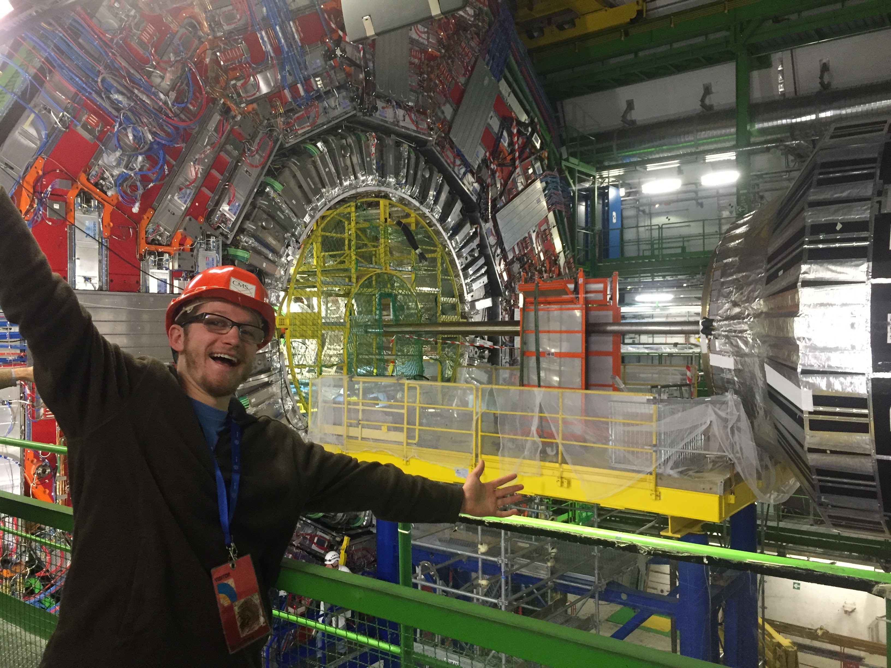
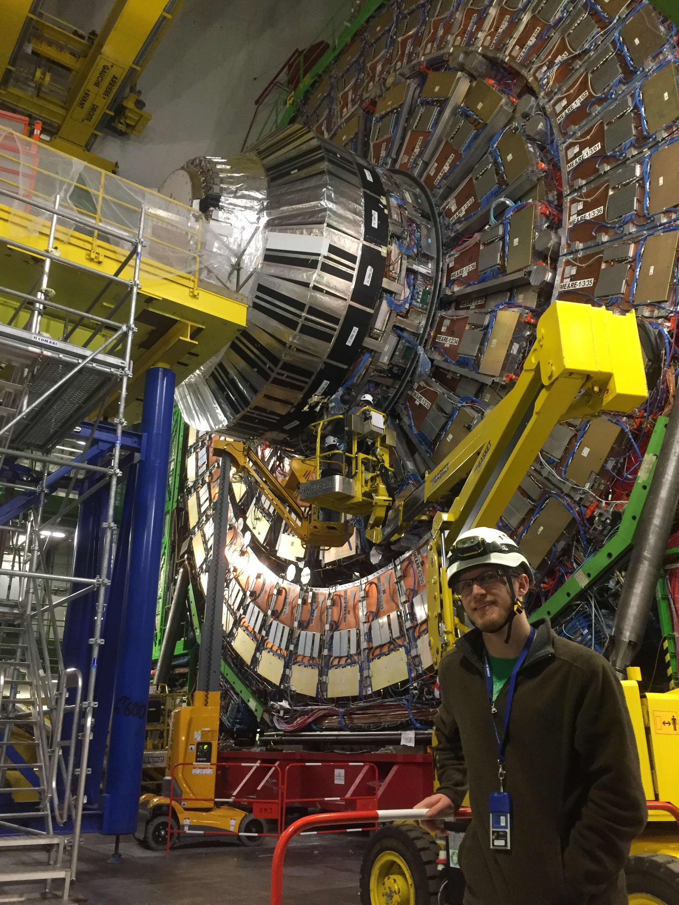
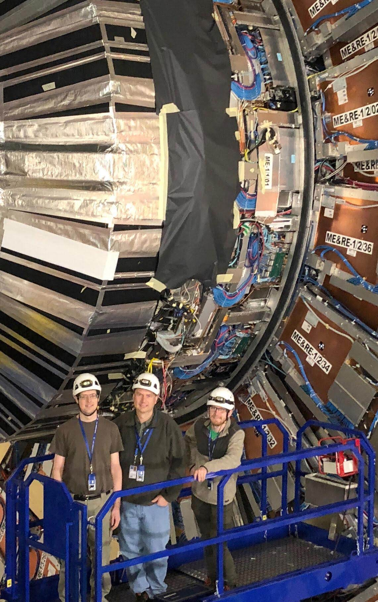

Table of the Standard Model (SM) of elementary particles.

Elementary particles in supersymmetry (SUSY),
with the Standard Model particles on the left
and their supersymmetric counterparts on the right.

Overview of the accelerator complex at CERN.

Diagram representing a transverse slice through the Compact Muon Solenoid (CMS) experiment.
Examples of different types of particles and their interactions with subdetectors are shown.

Some of the Baylor CMS team at CMS.
From left to right: Jay Dittmann, Kenichi Hatakeyama, Caleb Smith, and Joe Pastika. (2017)


Me at CMS, with the barrel on the left, one of the two endcaps on the right,
and the Large Hadron Collider (LHC) beamline in the center. (2017)

Me at CMS, on the ground of the experimental cavern.
Behind me, there are collaborators in a cherry picker working on one of the Hadron Calorimeter (HCAL) endcaps. (2017)

Some of the Baylor CMS team in a scissor lift next to one of the endcaps.
From left to right: Joe Pastika, Jay Dittmann, and Caleb Smith. (2018)